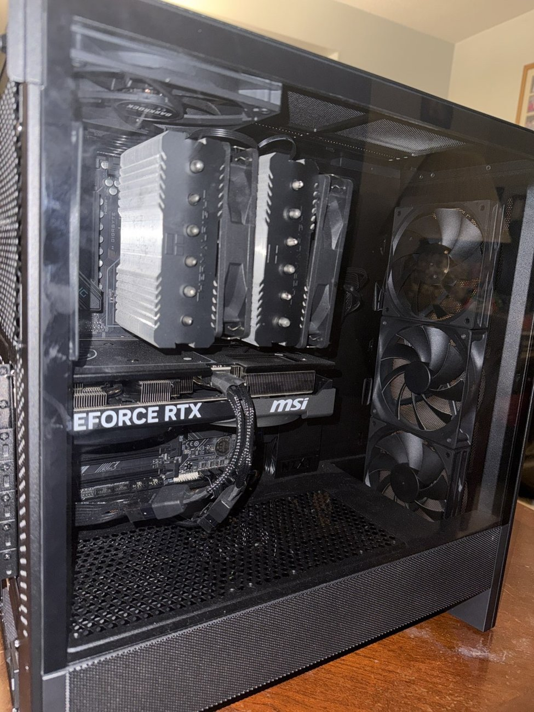
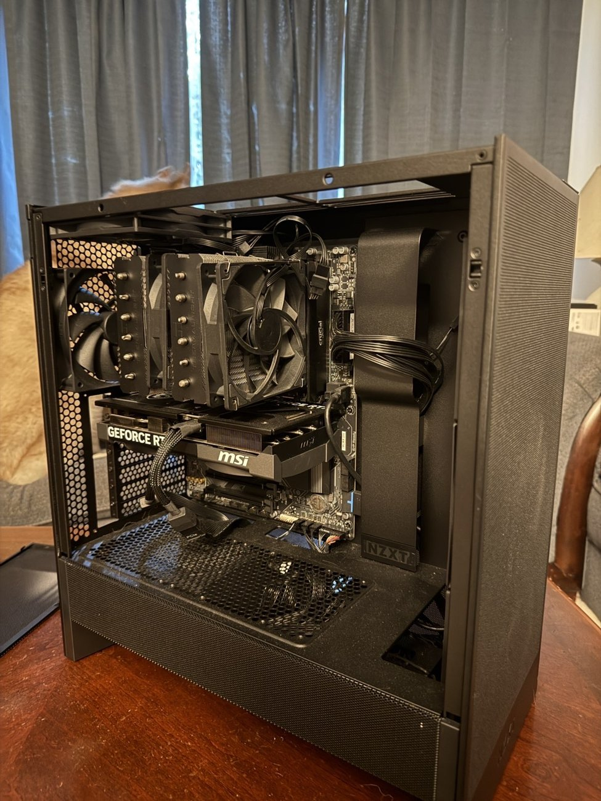
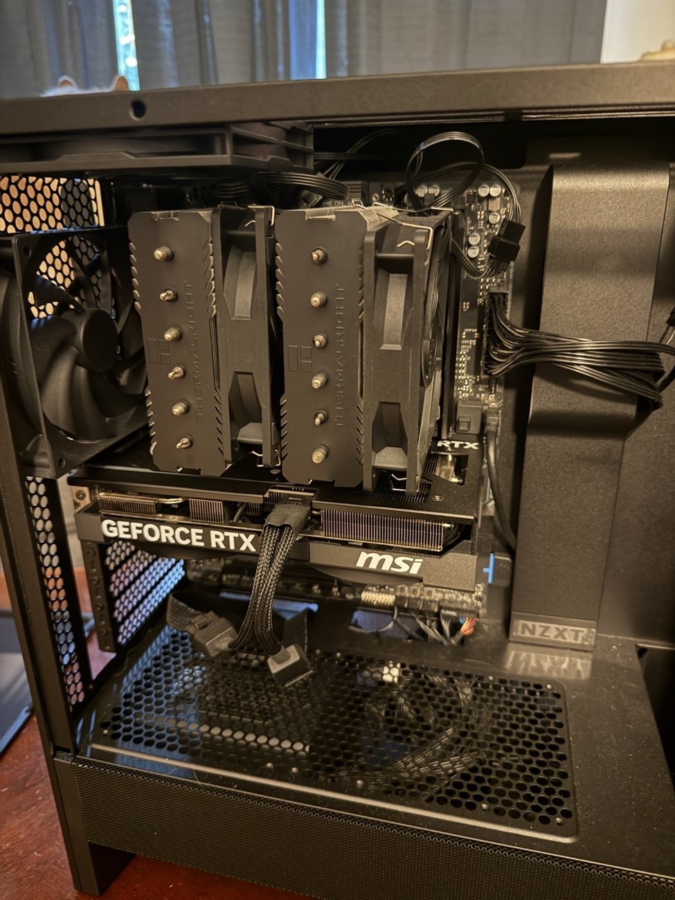
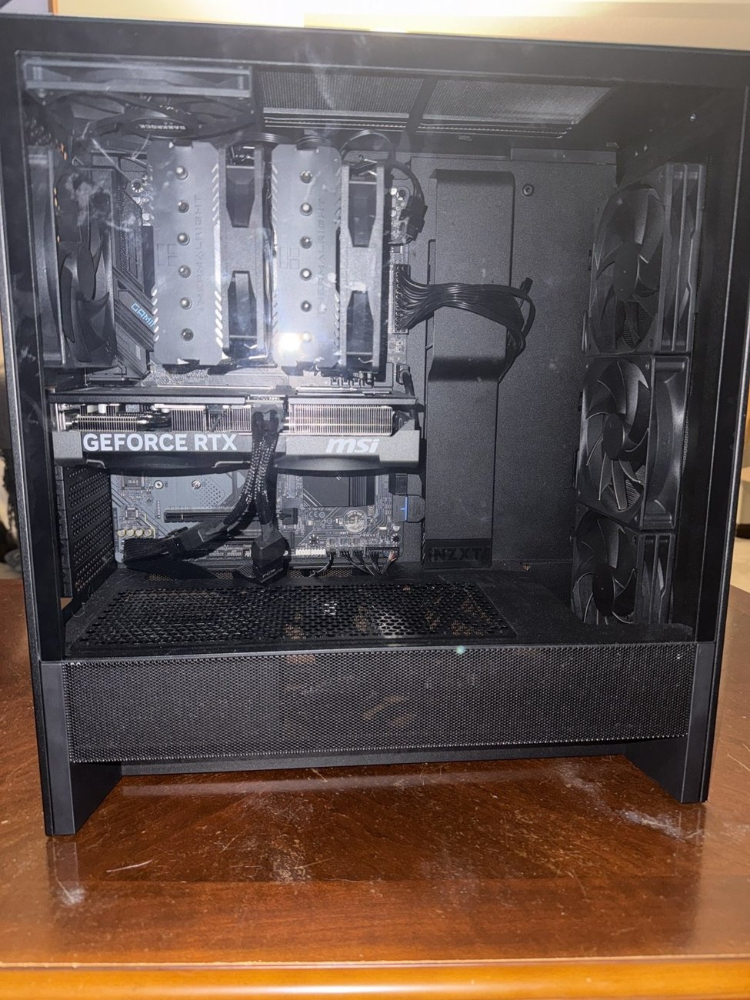

PC Build for Josh
Assembled a desktop PC for a friend and explained the hardware and installation process along the way.

Project overview
I assembled a desktop PC for my friend Josh and explained the components and assembly process as we worked. I researched and selected the components for his build, then assembled the system with him.
My role
I handled the assembly while showing Josh how each component fit into the system. I explained the motherboard, CPU cooler, graphics card, storage, and case connections as we worked.
Startup and fan troubleshooting
On the first startup, the motherboard showed a red CPU diagnostic light. I powered on the system with one RAM module removed, shut it down, reinstalled the module, and restarted it. The PC then booted successfully. We did not identify a faulty component or confirm the cause.
Some case fans also did not run at first. I moved their cables to different motherboard fan headers until the fans operated. This build did not have the airflow-orientation issue I encountered on my own PC.
Documentation
The photographs show the completed computer from several angles, including views with the side panel removed. We did not photograph each step of the build.
Project gallery
Select any photo to view the full, uncropped image. Use the arrows to browse.


